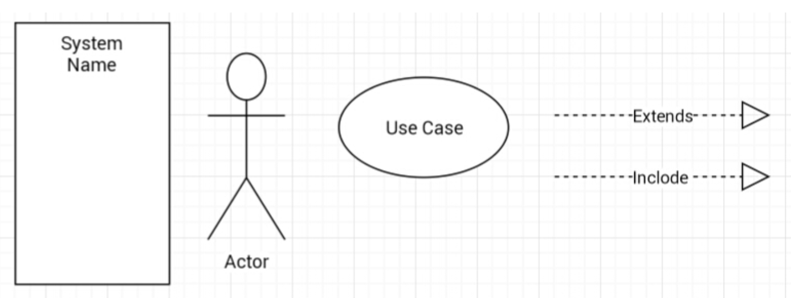
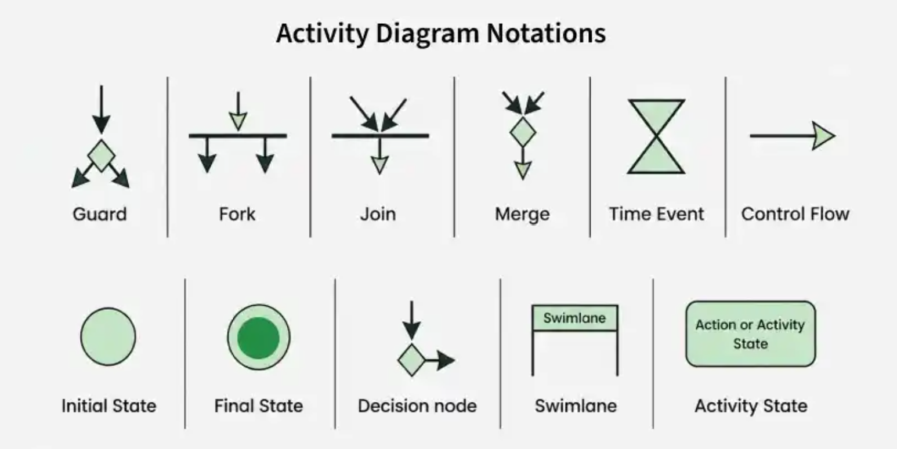
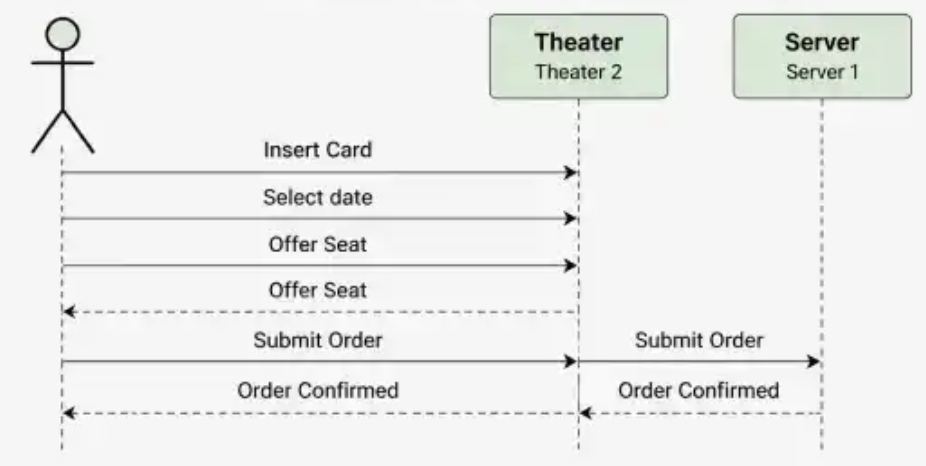
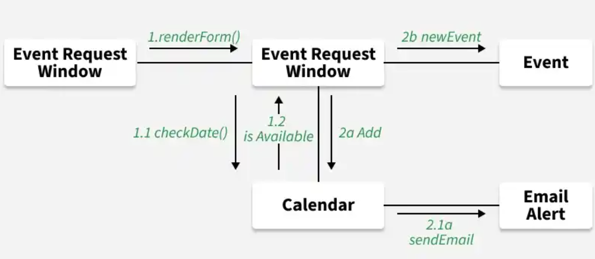
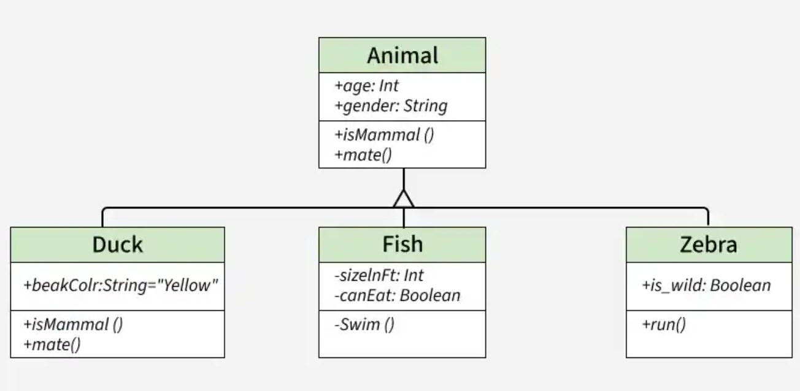
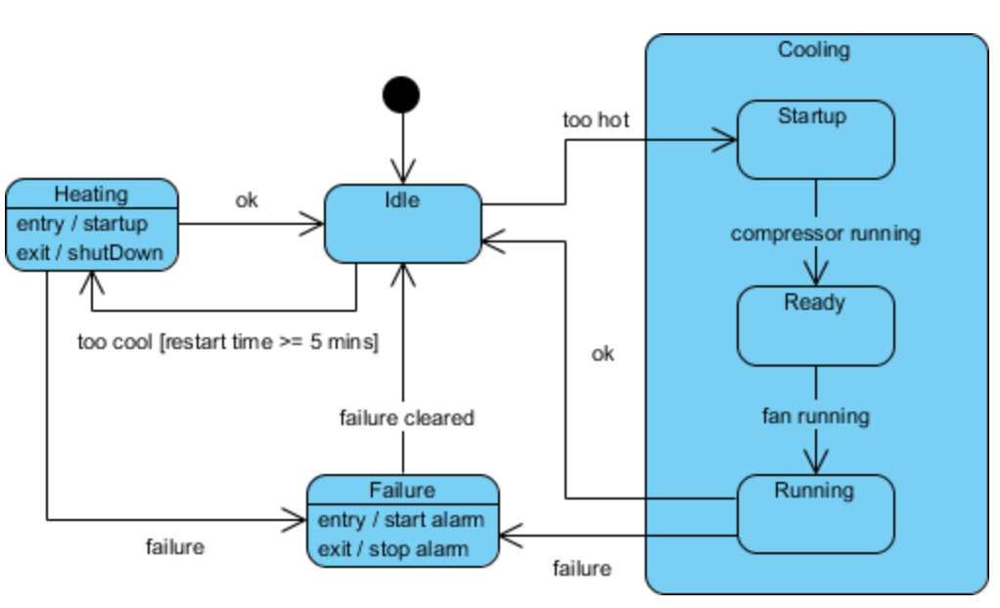
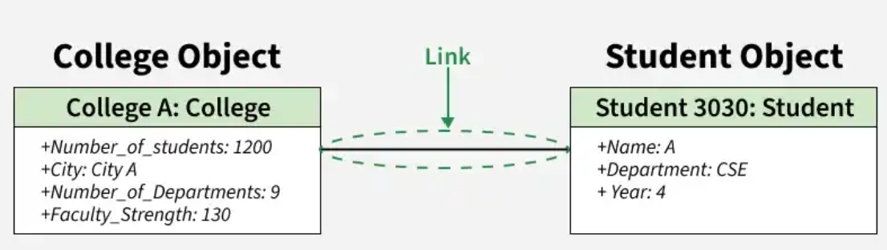
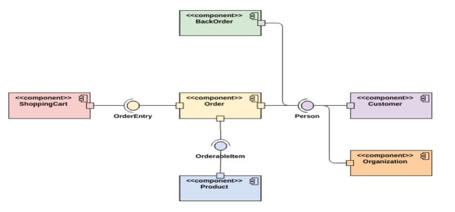

Structural Diagrams
توضّح البنية الثابتة للنظام ومكوّناته والعلاقات بينها.
Class
Object
Component
تعرّف على مخططات UML، واستخداماتها، وعناصرها الأساسية، والعلاقات التي تساعدك على فهم الأنظمة وتصميمها.
استكشف المخططاتتنقسم المخططات المعروضة في هذا الدليل إلى تصنيفين رئيسيين.
توضّح البنية الثابتة للنظام ومكوّناته والعلاقات بينها.
توضّح سلوك النظام والتفاعلات وسير العمليات.
اختر أي مخطط للتعرّف على هدفه وعناصره الأساسية.

يوضّح المتطلبات الوظيفية للنظام والتفاعل بين الجهات المتفاعلة والنظام.
التفاصيل ←
يوضّح تسلسل الأنشطة والقرارات والمسارات المختلفة في سير العمل.
التفاصيل ←
يوضّح ترتيب الرسائل المتبادلة بين المشاركين بمرور الوقت.
التفاصيل ←
يركّز على الروابط بين المشاركين والرسائل المتبادلة وترتيبها.
التفاصيل ←

يوضّح حالات الكائن والانتقالات بينها استجابةً للأحداث والشروط.
التفاصيل ←

يوضّح المكوّنات البرمجية والواجهات والروابط بينها.
التفاصيل ←